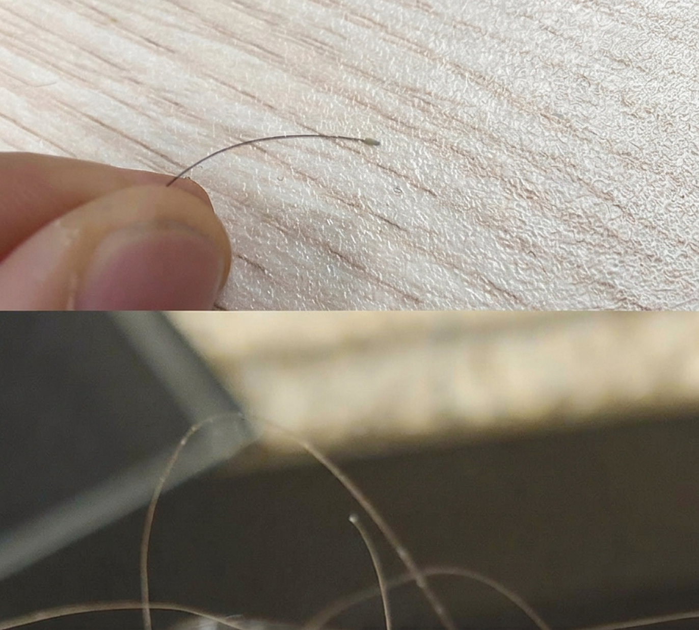
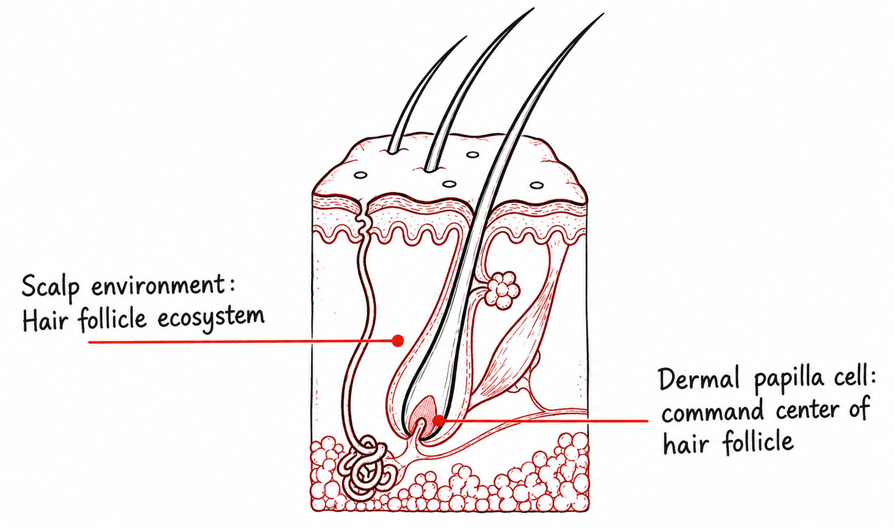
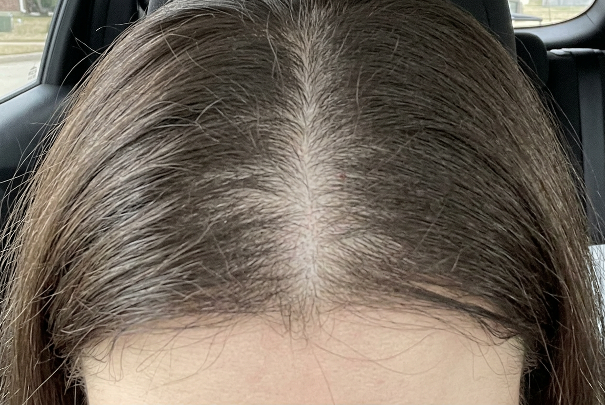

Why is no one talking about the fact that haircare brands never say specifically how their products are addressing the follicle?
If you’ve struggled with hair loss, I’m sure you know what hair follicles are, and you’re sick of seeing them.
My son was three months old the first time I noticed them. Little bulbs at the roots of my fallen hairs in the sink. Then came the strands in the shower drain and tangled in my baby’s blanket.
I was frustrated, postpartum, and just looking for answers. Nobody could tell me why it was happening, or what to do in the meantime.
So, at 2 a.m., scrolling online, I started buying. The rosemary oil. The pretty bottle. The serum an influencer swore by.
But I continued to notice those follicles on the hairs in my brush. It’s the part that the haircare industry almost never mentions, or describes in vague terms without specifying how the product targets them.

Seeing these on my fallen hair was the worst part of my day.
But that tiny white bulb at the end turned out to be a clue to what I’d been getting wrong all along.
I needed to ask more specific questions. Not “Will this make my hair look thicker?” but “Is anything I’m using actually reaching my follicles?”
So I went digging. The first brand that actually mentioned follicles in depth in their product claims was this one called RE:YOU. I decided to do the research and share it here.
Ask these four questions before buying anything. I’ll use RE:YOU’s Dual-Path Hair Revival Serum as an example.
☕ The tea: Most hair products work on hair that’s already dead. The part that actually makes your hair grow, the follicle, sits below the surface, and plenty of products never even mention it.
Question 1: Why do follicles matter?
The hair you see is already dead!
Everything that decides how thick, how strong and how long it grows happens below the surface, inside the follicle.
At the base of every follicle sits a tiny cluster of cells called the dermal papilla. Think of it as the follicle’s command center. It tells the follicle when to grow, how long to keep growing and how thick each new strand should be.
With age, stress and hormonal shifts, those command-center cells slow down. The growth phase gets shorter. Each new strand comes in a little finer than the last. And the shedding you notice in the drain is often the end result of changes that started months earlier.
The follicle also depends on its surroundings. It needs a scalp environment rich in oxygen and repair signals to keep producing healthy hair. When that environment declines, the follicle weakens too.

That was my lightbulb moment. If thinning starts at the follicle and the scalp around it, a product that only coats the strand can’t do much about it.
💡 The TLDR:
- The hair you see is already dead.
- The follicle’s command center decides how your hair grows.
- The scalp is the soil it grows in.
- A product that only coats the strand can’t reach either one.
Question 2: How does the product specifically target follicles?
Once I understood that, every serum needed to answer the question: “What are you doing for my follicles?”
When it came to the RE:YOU serum, it’s in the name. “Dual-Path” means the serum is designed to support both of the systems I just described: the follicle’s command center and the scalp environment around it.
It does this with NOVOGRO™, a set of three molecules RE:YOU discovered through AI discovery.
They screened around 20 million molecules to find ones designed specifically for hair follicles, rather than re-purposing ingredients made for something else (looking at you, minoxidil and caffeine).
✓ Let’s get specific:
- The seed (NOVOGRO™ 623 + 624): reach inside the follicle to increase activity of its command-center cells.
- The soil (NOVOGRO™ 273): supports a healthier scalp environment around the follicle by activating repair signals and nutrient availability.
That two-sided approach made sense to me, because I couldn’t pin down a single cause for my thinning. Was it postpartum hormones, stress, or months of broken sleep? Probably all of them.
It’s also drug-free and non-hormonal, which is a non-negotiable for me (more on that later).
Question 3: How is it different from minoxidil?
If you’ve searched for solutions to hair thinning, you’ve met minoxidil. It’s the long-standing gold standard, and for good reason: it has decades of use behind it.
But it wasn’t originally made for hair. It began as a blood pressure medication, and its hair effects were discovered along the way. Who was going to tell me I’ve been putting blood pressure meds into my body?
It’s unbelievable. Most products in this category either re-purpose an existing drug or blend popular botanicals and hope for the best.
That’s why you get troublesome side effects, like the minoxidil dread shed, that formulators can’t get rid of without taking away the hair growth effectiveness.

I can’t believe I’m posting this on the internet for everyone to see, but this was my hair 3 weeks into trying minoxidil last year.
It gets worse before it gets better, but I couldn’t stick with it.
I’m so traumatized I’ve stuck with drug-free serums since then.
RE:YOU started from the other direction: they studied why follicles decline, then designed entirely new molecules to address those specific pathways.
☕ Minoxidil side effects:
- Shedding gets worse at first
- Stop using it, and hair loss returns
- Scalp irritation and dryness
- Acne at site of application
- Facial hair growth (rare)
Question 4: What’s the evidence?
This is where most hair products lose me. “Clinically tested” usually means experimental design that is not rigorous enough to reflect the difference it would make on a real person.
RE:YOU ran a randomized, double-blind clinical study with 190 women with visible thinning. Neither participants nor evaluators knew who was using which product. And instead of comparing against a placebo, it compared the serum directly against minoxidil.
Results were measured four ways: scalp imaging, dermatologist grading, standardized comb tests and participant questionnaires. After 90 days of use:
| Measure | Result |
|---|---|
| Participants with less shedding | 97% |
| Decrease in hair loss (comb test) | 56%, which is 44% better than minoxidil |
| Increase in average hair density | 14% |
| Participants with thicker hair (analyzed by machine) | 67% |
| Participants saw stronger hair with less breakage | 84% |
In the lab, NOVOGRO™ increased dermal papilla cell activity by 20%, boosted growth-supporting signaling by 52% and raised pro-growth factor production by 15%, all compared with control.
☕ We love transparency:
The underlying research is published as a preprint anyone can read. I guess there are some real scientists on that team who won’t let unsupported claims fly.
Stop treating the part of your hair that’s already dead
Now, I’ll never buy anything for my hair loss without asking these questions.
📍 My 4-question checklist:
- Does it work at the follicle, or just the strand?
- What exactly is it targeting?
- How does it compare to minoxidil?
- What’s the evidence?
For me, RE:YOU’s Dual-Path Hair Revival Serum was one of the few products that had an answer to all four.
That’s why it’s the one I stuck with.

RE:YOU Dual-Path Hair Revival Serum
- Targets the follicle, not just the strand
- Supports dermal papilla cells as well as the scalp environment
- No minoxidil side effects
- Backed by evidence